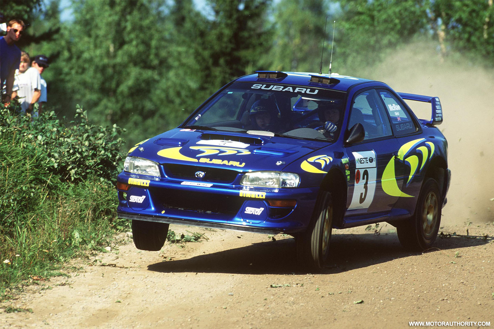
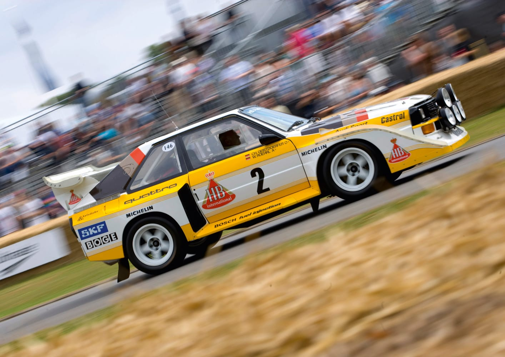
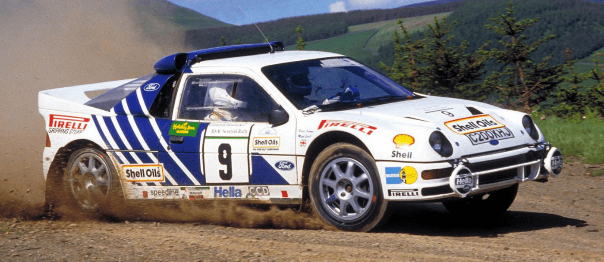
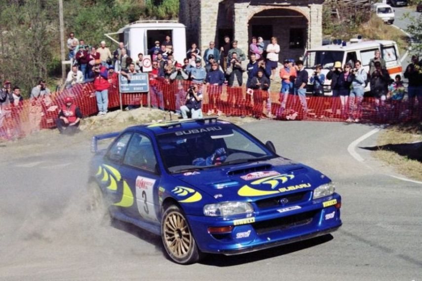
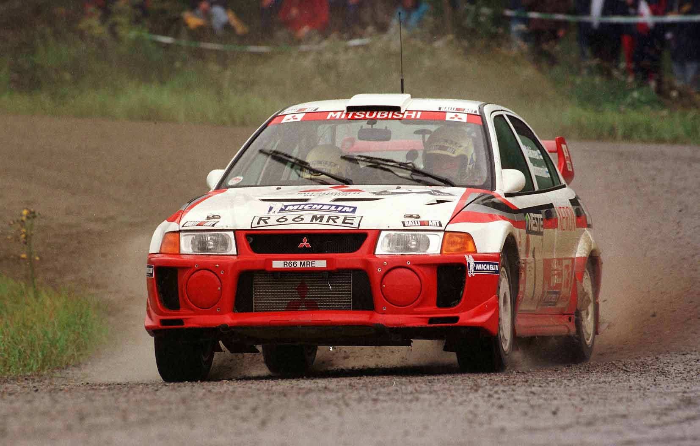
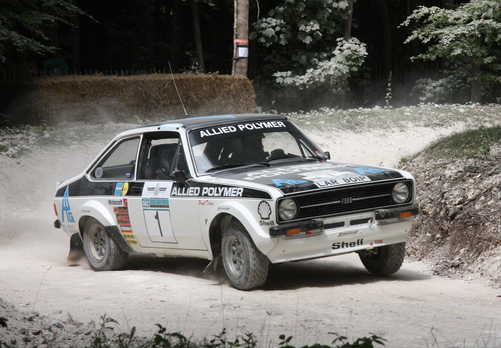

the greatest rally cars ever made

Rally racing is one of the toughest motorsports in the world. Cars face gravel, snow, mud, and tarmac, often on the same day. They need to be fast, but more importantly, they need to be durable, agile and dependable under the harshest conditions.
So, what makes a great rally car? A strong chassis, robust suspension, lightweight build, and an engine that delivers reliable power. Add in advanced brakes, and safety features like a roll cage, and you’ve got the right ingredients.
Examples: 1985 Audi Sport Quattro S1

1985 Audi Sport Quattro S1 Engine: 2.1L Inline-5 / Power: 540 bhp / Torque: 435 ft-lbs / Drivetrain: Quattro AWD / 0-60 mph: 3.1 sec / Notable driver(s): Michele Mouton, Walter R?hrl, Hannu Mikkola
1986 Ford RS200 Evolution

Engine: 2.1L Inline-4 / Power: 580 bhp / Torque: 400 ft-lbs / Drivetrain: 4WD / 0-60 mph: 3.0 sec / Notable driver(s): Stig Blomqvist
Subaru Impreza

Engine: 2.0L Boxer-4 / Power: 310 bhp / Torque: 367 ft-lbs / Drivetrain: 4WD / 0-60 mph: 5.0 sec / Notable driver(s): Colin McRae
1997 Mitsubishi Lancer Evolution IV

Engine: 2.0L Inline-4 / Power: 280 bhp / Torque: 369 ft-lbs / Drivetrain: 4WD / 0-60 mph: 5.5 sec / Notable driver(s): Tommi M?kinen
1975 Ford Escort RS1800

Engine: 1.8L Inline-4 / Power: 115 bhp / Torque: 126 ft-lbs / Drivetrain: RWD / 0-60 mph: 8.2 sec / Notable driver(s): Hannu Mikkola, Ari Vatanen, Bj?rn Waldeg?rd